|
After Thought: The Computer Challenge To Human Intelligence
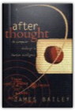
James Bailey
Through the first fifty years of the computer revolution, scientists have been trying to program electronic circuits to process information the same way humans do. Doing so has reassured us all that underlying every new computer capability, no matter how miraculously fast or complex, are human thought processes and logic. But cutting-edge computer scientists are coming to see that electronic circuits really are alien, that the difference between the human mind and computer capability is not merely one of degree (how fast), but of kind(how). The author suggests that computers “think” best when their “thoughts” are allowed to emerge from the interplay of millions of tiny operations all interacting with each other in parallel. Why then, if computers bring to the table such very different strengths and weaknesses, are we still trying to program them to think like humans? A work that ranges widely over the history of ideas from Galileo to Newton to Darwin yet is just as comfortable in the cutting-edge world of parallel processing that is at this very moment yielding a new form of intelligence, After Thought describes why the real computer age is just beginning.
Flags of Our Fathers
In February 1945, American Marines plunged into the surf at Iwo Jima—and into history. Through a hail of machine-gun and mortar fire that left the beaches strewn with comrades, they battled to the island's highest peak. And after climbing through a landscape of hell itself, they raised a flag. Now the son of one of the flagraisers has written a powerful account of six very different young men who came together in a moment that will live forever. To his family, John Bradley never spoke of the photograph or the war. But after his death at age seventy, his family discovered closed boxes of letters and photos. In Flags of Our Fathers, James Bradley draws on those documents to retrace the lives of his father and the men of Easy Company. Following these men's paths to Iwo Jima, James Bradley has written a classic story of the heroic battle for the Pacific's most crucial island—an island riddled with Japanese tunnels and 22,000 fanatic defenders who would fight to the last man. But perhaps the most interesting part of the story is what happened after the victory. The men in the photo—three were killed during the battle—were proclaimed heroes and flown home, to become reluctant symbols. For two of them, the adulation was shattering. Only James Bradley's father truly survived, displaying no copy of the famous photograph in his home, telling his son only: "The real heroes of Iwo Jima were the guys who didn't come back." Few books ever have captured the complexity and furor of war and its aftermath as well as Flags of Our Fathers. A penetrating, epic look at a generation at war, this is history told with keen insight, enormous honesty, and the passion of a son paying homage to his father. It is the story of the difference between truth and myth, the meaning of being a hero, and the essence of the human experience of war. The Hero with a Thousand Faces
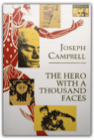
Joseph Campbell
Joseph Campbell's classic cross-cultural study of the hero's journey has inspired millions and opened up new areas of research and exploration. Originally published in 1949, the book hit the New York Times best-seller list in 1988 when it became the subject of The Power of Myth, a PBS television special.The first popular work to combine the spiritual and psychological insights of modern psychoanalysis with the archetypes of world mythology, the book creates a roadmap for navigating the frustrating path of contemporary life. Examining heroic myths in the light of modern psychology, it considers not only the patterns and stages of mythology but also its relevance to our lives today—and to the life of any person seeking a fully realized existence. Myth, according to Campbell, is the projection of a culture's dreams onto a large screen; Campbell's book, like Star Wars, the film it helped inspire, is an exploration of the big-picture moments from the stage that is our world. It is a must-have resource for both experienced students of mythology and the explorer just beginning to approach myth as a source of knowledge. Shampoo Planet
Forging Democracy: The History of the Left in Europe, 1850-2000
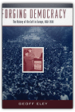
Geoff Eley
Democracy in Europe has been a recent phenomenon. Only in the wake of World War II were democratic frameworks secured, and, even then, it was decades before democracy truly blanketed the continent.Neither given nor granted, democracy requires conflict, often violent confrontations, and challenges to the established political order. In Europe, Geoff Eley convincingly shows, democracy did not evolve organically out of a natural consensus, the achievement of prosperity, or the negative cement of the Cold War. Rather, it was painstakingly crafted, continually expanded, and doggedly defended by varying constellations of socialist, feminist, Communist, and other radical movements that originally blossomed in the later nineteenth century. Parties of the Left championed democracy in the revolutionary crisis after World War I, salvaged it against the threat of fascism, and renewed its growth after 1945. They organized civil societies rooted in egalitarian ideals which came to form the very fiber of Europe's current democratic traditions. The trajectories of European democracy and the history of the European Left are thus inextricably bound together. Geoff Eley has given us the first truly comprehensive history of the European Left—its successes and failures; its high watermarks and its low tides; its accomplishments, insufficiencies, and excesses; and, most importantly, its formative, lasting influence on the European political landscape. At a time when the Left's influence and legitimacy are frequently called into question, Forging Democracy passionately upholds its vital contribution. Paul Revere's Ride
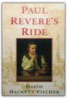
David Hackett Fischer
Paul Revere's midnight ride looms as an almost mythical event in American history—yet it has been largely ignored by scholars and left to patriotic writers and debunkers. Now one of the foremost American historians offers the first serious look at the events of the night of April 18, 1775—what led up to it, what really happened, and what followed—uncovering a truth far more remarkable than the myths of tradition.In Paul Revere's Ride, David Hackett Fischer fashions an exciting narrative that offers deep insight into the outbreak of revolution and the emergence of the American republic. Beginning in the years before the eruption of war, Fischer illuminates the figure of Paul Revere, a man far more complex than the simple artisan and messenger of tradition. Revere ranged widely through the complex world of Boston's revolutionary movement—from organizing local mechanics to mingling with the likes of John Hancock and Samuel Adams. When the fateful night arrived, more than sixty men and women joined him on his task of alarm—an operation Revere himself helped to organize and set in motion. Fischer recreates Revere's capture that night, showing how it had an important impact on the events that followed. He had an uncanny gift for being at the center of events, and the author follows him to Lexington Green—setting the stage for a fresh interpretation of the battle that began the war. Drawing on intensive new research, Fischer reveals a clash very different from both patriotic and iconoclastic myths. The local militia were elaborately organized and intelligently led, in a manner that had deep roots in New England. On the morning of April 19, they fought in fixed positions and close formation, twice breaking the British regulars. In the afternoon, the American officers switched tactics, forging a ring of fire around the retreating enemy which they maintained for several hours—an extraordinary feat of combat leadership. In the days that followed, Paul Revere led a new battle— for public opinion—which proved even more decisive than the fighting itself. ] When the alarm-riders of April 18 took to the streets, they did not cry, "the British are coming," for most of them still believed they were British. Within a day, many began to think differently. For George Washington, Thomas Jefferson, John Adams, and Thomas Paine, the news of Lexington was their revolutionary Rubicon. Paul Revere's Ride returns Paul Revere to center stage in these critical events, capturing both the drama and the underlying developments in a triumphant return to narrative history at its finest. Emo's Great Story
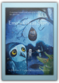
Brendhan Garland
Emo's Great Story is a fun read for the whole family. You'll love EMo, a wonderful groundhog whose dream is to meet The Great Crocodile, lengendary for his good works. Emo's adventure introduces him to new friends and new understandings. Emo learns that the death of ahero doesn't have to end the hero's dream. And, that a dream may come tue when it's least expected.
The Day the War Ended: May 8, 1945 : Victory in Europe
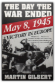
Martin Gilbert
"Out of the nightmare, out of the endless tattered processions of refugees, the divisions victorious and defeated milling this way and that, the vile prisons festering with disease, a thousand pungent details and incongruous names leap out of the pages. . . . It is a tremendous portrait of Europe in the weeks and months around V-E Day."—Jan Morris, Independent (London). photos.
Memoirs of a Geisha: A Novel
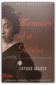
Arthur Golden
A literary sensation and runaway bestseller, this brilliant debut novel tells with seamless authenticity and exquisite lyricism the true confessions of one of Japan's most celebrated geisha.Speaking to us with the wisdom of age and in a voice at once haunting and startlingly immediate, Nitta Sayuri tells the story of her life as a geisha. It begins in a poor fishing village in 1929, when, as a nine-year-old girl with unusual blue-gray eyes, she is taken from her home and sold into slavery to a renowned geisha house. We witness her transformation as she learns the rigorous arts of the geisha: dance and music; wearing kimono, elaborate makeup, and hair; pouring sake to reveal just a touch of inner wrist; competing with a jealous rival for men's solicitude and the money that goes with it. In Memoirs of a Geisha, we enter a world where appearances are paramount; where a girl's virginity is auctioned to the highest bidder; where women are trained to beguile the most powerful men; and where love is scorned as illusion. It is a unique and triumphant work of fiction—at once romantic, erotic, suspenseful—and completely unforgettable. The Dark Wind
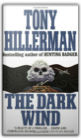
Tony Hillerman
A corpse whose palms and soles have been "scalped" is only the first in a series of disturbing clues: an airplane's mysterious crash in the nighttime desert, a bizarre attack on a windmill, a vanishing shipment of cocaine. Sgt. Jim Chee of the Navajo Tribal Police is trapped in the deadly web of a cunningly spun plot driven by Navajo sorcery and white man's greed.
While Standing on One Foot: Puzzle Stories and Wisdom Tales from the Jewish Tradition
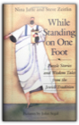
Nina Jaffe, Steven J. Zeitlin, John Segal
Calling on thousands of years of Jewish folktales, legends, rabbinical stories and literature, the authors show the wit and wisdom that are the cornerstones of the Jewish tradition. Posed as a question, each story turns on a conundrum that young readers can try to solve. The solutions are supplied within the tales. Illustrations.
Red Diapers: GROWING UP IN THE COMMUNIST LEFT
Red Diapers is the first anthology of autobiographical writings by the children of American communists. These memoirs, short stories, and poems reflect the joys and perils of growing up in a subculture defined by its opposition to society's most deeply held values. How red diaper children have come to terms with their political inheritance is the theme of this compelling anthology. Some contributors have fond memories of family activism, others recall the past with ambivalence or even pain. The authors range in age from their twenties to their eighties. Some, such as Watergate reporter Carl Bernstein and sixties activist Bettina Aptheker, are widely known themselves; some are the children of well-known American leftists, including Jeff Lawson, son of blacklisted screenwriter John Howard Lawson, and Robert Meeropol, son of Ethel and Julius Rosenberg. in disparate voices, the contributors elaborate on how their parents attempted to pass on to them the torch of radical politics. Quinn's Book
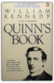
William J. Kennedy
Quinn's Book tells the story of Daniel Quinn, of his adventure-filled search for true love and the answer to the riddle of his own fate.
Big Trouble: A Murder in a Small Western Town Sets Off a Struggle for the Soul of America
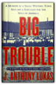
J. Anthony Lukas
From the author of Common Ground — one of the most acclaimed books of recent years — comes a grand narrative of the United States as it charged, full of hope and trepidation, into the twentieth century.J. Anthony Lukas, a masterful storyteller, tells a mesmerizing tale — of a terrible murder, a great trial, and the struggle they set off for the soul of America. Big Trouble begins on a snowy evening at Christmas time 1905 in the little town of Caldwell, Idaho, to which the state's former governor, Frank Steunenberg, had returned to head his family bank while contemplating his political future. As he walked home that night, he sensed all about him the bold, exuberant, unashamedly acquisitive spirit of Caldwell's young entrepreneurs, who — as his brother had written — were "here for the money." Like so many in the West at that time, these brothers believed their prospects for enriching themselves were limitless, that the future opened wide before them. ANd yet the governor suffered premonitions that he and his neighbors weren't fully in control of their own destiny, that something malign threatened their well-being. Now, as he followed the plume of his frozen breath, his boots crunching eight inches of freshly frozen snow, he turned through his garden gate and a bomb attached to the gatepost blew him "into eternity." The Man Who Smiled
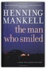
Henning Mankell
Dalgliesh.The Man Who Smiled begins with Wallander deep in a personal and professional crisis after killing a man in the line of duty; eventually, he vows to quit the Ystad police force for good. Just then, however, a friend who had asked Wallander to look into the death of his father winds up dead himself, shot three times. Ann-Britt Höglund, the department's first female detective, proves to be his best ally as he tries to pierce the smiling façade of his prime suspect, a powerful multinational business tycoon. But just as he comes close to uncovering the truth, the same shadowy threats responsible for the murders close in on Wallander himself. All of Mankell's talents as a master of the modern police procedural—which have earned him legions of fans worldwide—are showcased in The Man Who Smiled, which is the fourth of the eight Wallander books published thus far in English. Being Digital
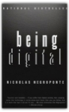
Nicholas Negroponte
In lively, mordantly witty prose, Negroponte decodes the mysteries—and debunks the hype—surrounding bandwidth, multimedia, virtual reality, and the Internet, and explains why such touted innovations as the fax and the CD-ROM are likely to go the way of the BetaMax. "Succinct and readable. . . . If you suffer from digital anxiety . . . here is a book that lays it all out for you."—Newsday.
Sex and Social Justice
Growing out of Nussbaum's years of work with an international development agency connected with the United Nations, this collection charts a feminism that is deeply concerned with the urgent needs of women who live in hunger and illiteracy, or under unequal legal systems. Offering an internationalism informed by development economics and empirical detail, many essays take their start from the experiences of women in developing countries. Nussbaum argues for a universal account of human capacity and need, while emphasizing the essential role of knowledge of local circumstance. Further chapters take on the pursuit of social justice in the sexual sphere, exploring the issue of equal rights for lesbians and gay men. Nussbaum's arguments are shaped by her work on Aristotle and the Stoics and by the modern liberal thinkers Kant and Mill. She contends that the liberal tradition of political thought holds rich resources for addressing violations of human dignity on the grounds of sex or sexuality, provided the tradition transforms itself by responsiveness to arguments concerning the social shaping of preferences and desires. She challenges liberalism to extend its tradition of equal concern to women, always keeping both agency and choice as goals. With great perception, she combines her radical feminist critique of sex relations with an interest in the possibilities of trust, sympathy, and understanding. Sex and Social Justice will interest a wide readership because of the public importance of the topics Nussbaum addresses and the generous insight she shows in dealing with these issues. Brought together for this timely collection, these essays, extensively revised where previously published, offer incisive political reflections by one of our most important living philosophers. Grand Expectations: The United States, 1945-1974
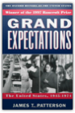
James T. Patterson
Beginning in 1945, America rocketed through a quarter-century of extraordinary economic growth, experiencing an amazing boom that soared to unimaginable heights in the 1960s. At one point, in the late 1940s, American workers produced 57 percent of the planet's steel, 62 percent of the oil, 80 percent of the automobiles. The U.S. then had three-fourths of the world's gold supplies. English Prime Minister Edward Heath later said that the United States in the post-War era enjoyed "the greatest prosperity the world has ever known." It was a boom that produced a national euphoria, a buoyant time of grand expectations and an unprecedented faith in our government, in our leaders, and in the American dream—an optimistic spirit which would be shaken by events in the '60s and '70s, and particularly by the Vietnam War.Now, in Grand Expectations, James T. Patterson has written a highly readable and balanced work that weaves the major political, cultural, and economic events of the period into a superb portrait of America from 1945 through Watergate. Here is an era teeming with memorable events—from the bloody campaigns in Korea and the bitterness surrounding McCarthyism to the assassinations of the Kennedys and Martin Luther King, to the Vietnam War, Watergate, and Nixon's resignation. Patterson excels at portraying the amazing growth after World War II—the great building boom epitomized by Levittown (the largest such development in history) and the baby boom (which exploded literally nine months after V-J Day)—as well as the resultant buoyancy of spirit reflected in everything from streamlined toasters, to big, flashy cars, to the soaring, butterfly roof of TWA's airline terminal in New York. And he shows how this upbeat, can-do mood spurred grander and grander expectations as the era progressed. Of course, not all Americans shared in this economic growth, and an important thread running through the book is an informed and gripping depiction of the civil rights movement—from the electrifying Brown v. Board of Education decision, to the violent confrontations in Little Rock, Birmingham, and Selma, to the landmark civil rights acts of 1964 and 1965. Patterson also shows how the Vietnam War—which provoked LBJ's growing credibility gap, vast defense spending that dangerously unsettled the economy, and increasingly angry protests—and a growing rights revolution (including demands by women, Hispanics, the poor, Native Americans, and gays) triggered a backlash that widened hidden rifts in our society, rifts that divided along racial, class, and generational lines. And by Nixon's resignation, we find a national mood in stark contrast to the grand expectations of ten years earlier, one in which faith in our leaders and in the attainability of the American dream was becoming shaken. The Oxford History of the United States The Oxford History of the United States is the most respected multi-volume history of our nation. The series includes three Pulitzer Prize winners, a New York Times bestseller, and winners of the Bancroft and Parkman Prizes. The Atlantic Monthly has praised it as "the most distinguished series in American historical scholarship," a series that "synthesizes a generation's worth of historical inquiry and knowledge into one literally state-of-the-art book." Conceived under the general editorship of C. Vann Woodward and Richard Hofstadter, and now under the editorship of David M. Kennedy, this renowned series blends social, political, economic, cultural, diplomatic, and military history into coherent and vividly written narrative. Hamlet - A User's Guide
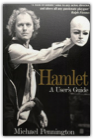
Michael Pennington
(Limelight). "Pennington's great experience of the play...love for it...depth of knowledge...of many productions and interpretations culminate in a book of infinite value to any actor, director and above all to any passionate playgoer...written with passion, humor and rigor...an excellent read." Ralph Fiennes
The Cathedral and the Bazaar: Musings on Linux and Open Source by an Accidental Revolutionary
It all started with a series of odd statistics. The leading challenger to Microsoft's stranglehold on the computer industry is an operating system called Linux, the product of thousands of volunteer programmers who collaborate over the Internet. The software behind a majority of all the world's web sites doesn't come from a big company either, but from a loosely coordinated group of volunteer programmers called the Apache Group. The Internet itself, and much of its core software, was developed through a process of networked collaboration. The key to these stunning successes is a movement that has come to be called open source, because it depends on the ability of programmers to freely share their program source code so that others can improve it. In 1997, Eric S. Raymond outlined the core principles of this movement in a manifesto called "The Cathedral and the Bazaar," which was published and freely redistributed over the Internet. Mr. Raymond's thinking electrified the computer industry. He argues that the development of the Linux operating system by a loose confederation of thousands of programmers—without central project management or control—turns on its head everything we thought we knew about software project management. Internet-enabled collaboration and free information sharing, not monopolistic control, is the key to innovation and product quality. This idea was interesting to more than programmers and software project leaders. It suggested a whole new way of doing business, and the possibility of unprecedented shifts in the power structures of the computer industry. The rush to capitalize on the idea of open source started with Netscape's decision to release its flagship Netscape Navigator product under open source licensing terms in early 1998. Before long, Fortune 500 companies like Intel, IBM, and Oracle were joining the party. By August 1999, when the leading Linux distributor, Red Hat Software, made its hugely successful public stock offering, it had become clear that open source was "the next big thing" in the computer industry. This revolutionary book starts out with "A Brief History of Hackerdom"—the historical roots of the open-source movement—and details the events that led to the recognition of the power of open source. It contains the full text of "The Cathedral & the Bazaar," updated and expanded for this book, plus Mr. Raymond's other key essays on the social and economic dynamics of open source software development. Open source is the competitive advantage in the Internet Age. The Cathedral & the Bazaar is a must for anyone who cares about the computer industry or the dynamics of the information economy. Already, billions of dollars have been made and lost based on the ideas in this book. Its conclusions will be studied, debated, and implemented for years to come. Dark Sun: The Making of the Hydrogen Bomb
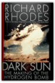
Richard Rhodes
The Pulitzer Prize-winning author of The Making of the Atomic Bomb now gives readers the enthralling, definitive story of the effort behind the creation of the H-Bomb—one of the most dramatic achievements in human history. Published to coincide with the 50th anniversary of the bombing of Hiroshima. 16 pages of photos. Index.
Holidays on Ice: Stories
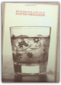
David Sedaris
Holidays on Ice collects six of David Sedaris's most profound Christmas stories into one slender volume perfect for use as a last-minute coaster or ice scraper. This drinking man's companion can be enjoyed by the warmth of a raging fire, the glow of a brilliantly decorated tree, or even in the backseat of a van or police car. It should be read with your eyes, felt with your heart, and heard only when spoken to. It should, in short, behave much like a book. And, oh, what a book it is!
The Control Revolution: How the Internet is Putting Individuals in Charge and Changing the World We Know
Red and the Black: A New Translation Backgrounds and Sources Criticism
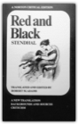
Stendhal, Robert M. Adams
The text of Stendhal's classic novel Le Rouge et le Noir in this volume is an entirely new translation which renders the novelist's strict, hard style into contemporary colloquial English. For the first time in an English translation, notes are given that explain the book's local allusions and concealed autobiographical reminiscences. Students interested in the backgrounds of the novel may read the newspaper account, for the first time in English, of the murder trial upon which some of the novel's events are founded. Other materials, on Stendhal's style and on the 1830's background, are also provided. As with all Norton Critical Editions in Continental literature, a number of commentaries are here translated for the first time: Henri Martineau, Jean Prevost, George Poulet, Jean-Pierre Richard, G. Tomasi di Lampedusa, Alain, Paul Valery, Paul Bourget, and Hippolyte Tame. Other critics are Erich Auerbach, Rene Girard, F. W. I. Hemmings, Jean-Paul Sartre, Andre Gide, Marcel Proust, Friedrich Nietzsche, Jose Ortega y Gasset, and Robert M. Adams.Each Norton Critical Edition includes an authoritative text, contextual and source materials, and a wide range of interpretations-from contemporary perspectives to the most current critical theory-as well as a bibliography and a chronology of the author's life and work. The War Within: America's Battle over Vietnam
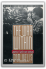
Tom Wells
The War Within is a painfully engrossing account of America’s internal battle over the Vietnam War. Hailed by critics of every persuasion, this absorbing narrative is the product of over a decade’s worth of research: the author sifted through thousands of government and antiwar documents and interviewed virtually all of the key players on both sides of the fence, from Dean Rusk, John Ehrlichman, and H. R. Haldeman to Dave Dellinger, Philip Berrigan, and Daniel Ellsberg. The result is this remarkable chronicle: the story of how a powerful grassroots movement ended our longest and least popular war. In these pages the Vietnam era comes to life through the words of scores of participants, who speak with candor and passion about this tumultuous time.
The Origins of Autocracy: Ivan the Terrible in Russian History
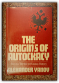
Alexander Yanov
|


My Library
Collection Total:
545 Items
545 Items
Last Updated:
Apr 7, 2013
Apr 7, 2013
 Made with Delicious Library
Made with Delicious Library